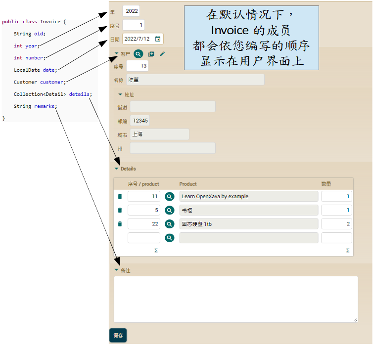
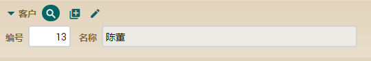
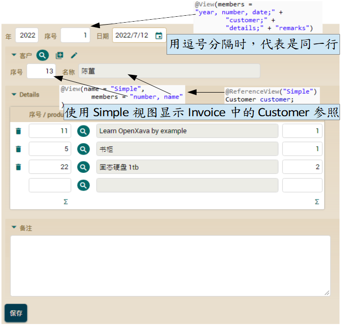

在本课中，我们将编写少量代码使我们的应用程序看起来更美观。

如您所见，OpenXava 会依您在代码中声明的顺序去显示界面上的成员，一个接着一个由上往下。此外，您可以看到在 Customer 参照那里，会使用 Customer 默认视图。
我们将做一些改进。首先，我们将明确定义成员的布局，通过这种方式，我们可以将 year、number 和 date 放在同一行中。其次，我们将在 Customer 使用更简单的视图。当用户在发票输入客户时，不需要查看所有数据。
使用 @View 定义布局
要在用户界面中定义 Invoice 成员的布局，您必须使用 @View 注解。这很简单，您只需要枚举想显示的成员。代码如下：
@View(members= // 这视图没名称，所以会作为默认视图使用
"year, number, date;" + // 当用逗号分隔时，代表是在同一行
"customer;" + // 分号代表是新的一行
"details;" +
"remarks"
)
public class Invoice {
最后，我们将显示 Invoice 所有成员，使用逗号分隔 year、number 和 date，这样它们会在同一行显示，且产生更紧凑的用户界面，如下：
使用 @ReferenceView 细节化用户参照界面
您仍然需要优化 Customer 参照的显示方式，因为它显示了 Customer 所有成员。而在 Invoice 中显示更简化的 Customer 视图应来会更好。为此，您需要在 Customer 中定义一个为 Simple 的视图，然后在 Invoice 指定要显示这个 Customer 的 Simple 视图。
首先，我们在 Customer 中定义 Simple 视图：
@View(name = "Simple", // 只有在指定 Simple 时才会使用此视图
members = "number, name" // 只有显示 number 和 name 并且在同一行
)
public class Customer {
如本例，当一个视图有名称时，该视图仅会在该名称被指定时才显示。也就是 说，虽然 Customer 只有这个 @View 注解，但是当你尝试显示 Customer 时，它不会使用这个 Simple 视图，而是默认的那个。如果您定义一个没有名称的@View，则该视图将是默认视图，不过这并不是我们想要的。
现在，您必须在 Invoice 中指定 Customer 的参照必须使用这个 Simple 视图。这须要通过@ReferenceView 完成。请以这种方式编辑 Invoice 中的 Customer 参照：
@ManyToOne(fetch=FetchType.LAZY, optional=false)
@ReferenceView("Simple") // 此参照将用名称为 Simple 的视图显示
Customer customer;
非常简单，您只需要在参照上指定你想要显示的视图名称即可。
这之后，Customer 参照会以更紧凑的方式显示：

在下面可以看到我们在 Invoice 所优化的界面。
优化后的用户界面
这是 Invoice 界面优化后的成果：

您已经看到使用 @View 和 @ReferenceView 为 Invoice 获得更紧凑的用户界面是多么的容易。
在没有出很多力的情况下，您已有了一个足够好的用户界面来开始工作了。
总结
在本课中，您学会了如何使用一些 OpenXava 的注解来优化默认的用户界面。如果您想了解更多使用 OpenXava 优化用户界面的方法，请查看参考指南。
对这节课有什么问题吗？ 前往轮譠 一切都顺利吗？ 前往第五章